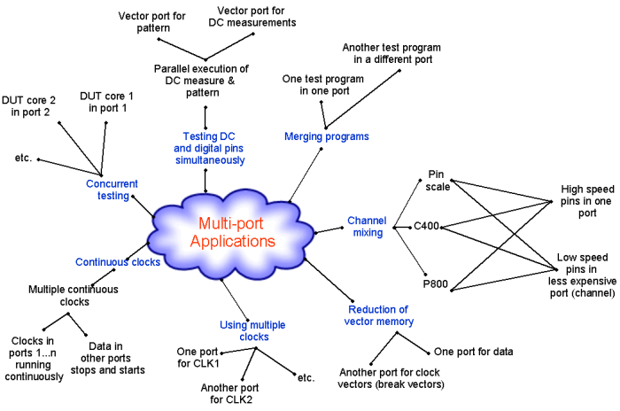

Introduction to Using Multi-Port for Applications
The following mind map shows a summary of applications that utilize a multi-port setup.

The following are some important applications which take advantage of the V93000 multi-port setup, which allows you to define pin groups in separate ports.
This manual describes some of these applications, which are listed below:
- Vector memory requirements can be reduced in certain circumstances by using a multi-port setup. This is described in the section Vector Memory Reduction.
- Testing devices with single or multiple phase locked loop circuitry possibly running at different frequencies which require uninterrupted test execution between test suites (continuous clocks). This is described in the section Continuous Clock Applications.
- Concurrent testing allows you to test different cores on a die or package in parallel. An example of this could be simultaneous testing of digital and analog cores or DC and functional tests. This contributes to test time reduction and is described in the section Concurrent Tests (CCT).
- Merging multiple test programs into one, saves test time, and can be well managed using a multi-port setup. This may, for example, be useful in a concurrent test setup. This is described in the section Merging Programs and Modifying them.
- Incorporating External Modules into the V93000 test program can be made easy with a multi-port setup. An example of this could be where you may wish to mount a specific module on your DUT board for a special application. This is described in the section Incorporating External Modules into V93000 Programs.
- Using a multi-port setup for scan testing is a possibility to save on vector memory by
placing the fast parallel pins into one port and the slower scan pins into another.
The repeat vectors for the fast parallel port can then be translated to a very short port pattern with the vectors repeated, hence saving memory. This is described in the section Scan Testing in a Multi-Port Setup
Functional changes
- Introduced before SmarTest 6.3.2